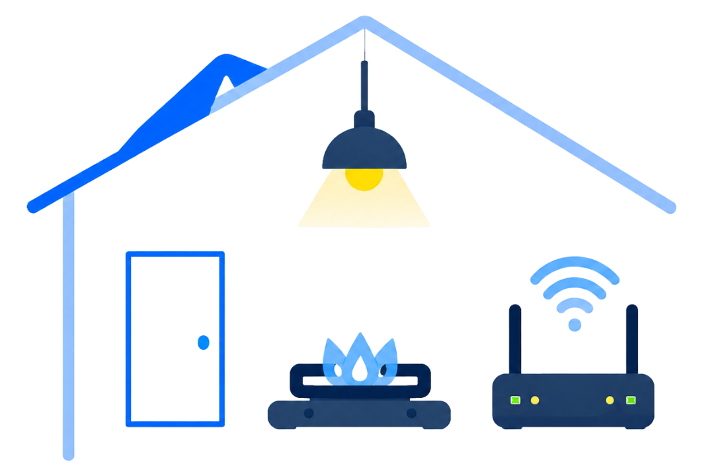

東京都 水道手続き窓口
ご利用はカンタン3ステップ
-
1お申し込み
-
2内容確認
-
3使用開始
お電話で水道使用開始
通話料無料
0800-000-0000受付時間：10:00〜19:00（土日祝OK・年末年始を除く）

電気・ガス・ネット回線も
まとめて相談可能！
お引越しに伴うライフラインのお手続きも一度にご相談いただけます。
水道の使用開始手続きフォーム
必要事項をご入力のうえ送信してください。
送信後、担当者よりお電話にて内容を確認し、水道の使用開始手続きを進めます。
よくあるご質問
Q. 申し込み後はどうなりますか？
フォーム送信後、当窓口の担当者よりお電話にてご連絡いたします。ご入力いただいた内容を確認のうえ、使用開始日に合わせて水道局への手続きを代行いたします。
Q. 電話はいつ来ますか？
原則として営業時間内（10:00〜19:00）にお電話いたします。申込内容や時間帯によっては翌営業日のご連絡となる場合がございます。
Q. 水道使用開始希望日は指定できますか？
はい、ご指定いただけます。お申込みフォームの「水道使用開始希望日」欄にご希望日をご入力ください。直近のご希望や土日祝のご利用についてはお電話でご相談ください。
Q. 固定電話でも申し込みできますか？
はい、固定電話番号でもお申込みいただけます。市外局番を含む10桁の番号をハイフンなしでご入力ください。
Q. メールアドレスは必須ですか？
メールアドレスのご入力は任意です。お電話でのご連絡が原則となりますが、メールでの控えをご希望の場合はご入力ください。
Q. 電気・ガス・ネット回線も相談できますか？
はい、お引越しに伴う電気・ガス・インターネット回線のお手続きもまとめてご相談いただけます。お申込み時または折返しのお電話にてお伝えください。
安心してご利用いただくために
弊社は各水道局と正規連携し、
水道使用開始に関する手続きを行っております。
本サイトは水道使用開始手続きの代理店窓口です。
お客様の代理として各水道局への申込手続きを行います。
© 東京都 水道手続き窓口